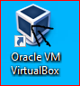
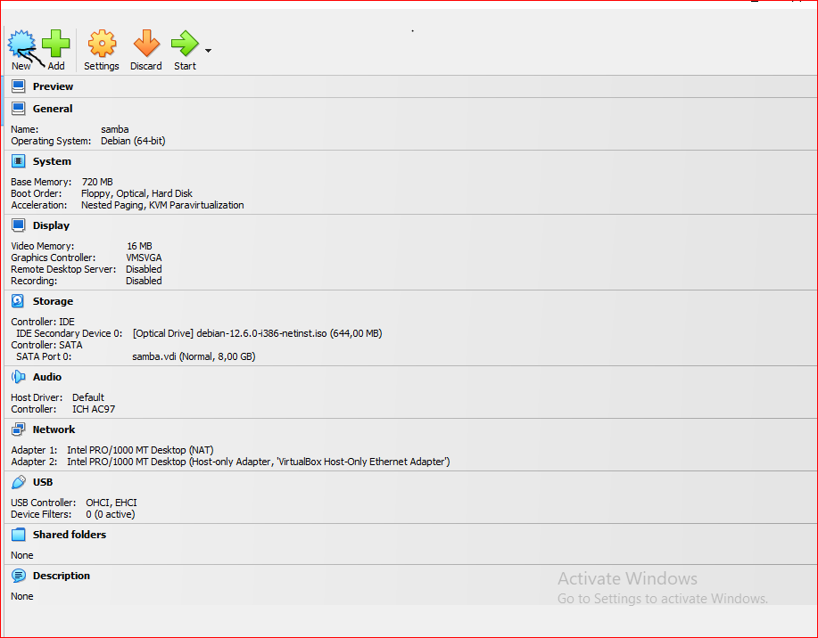
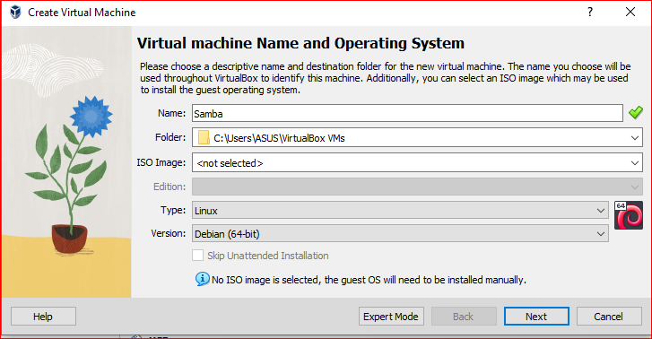
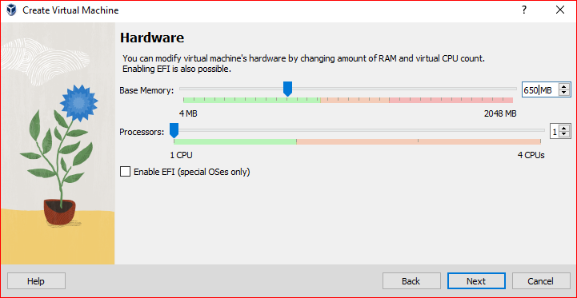
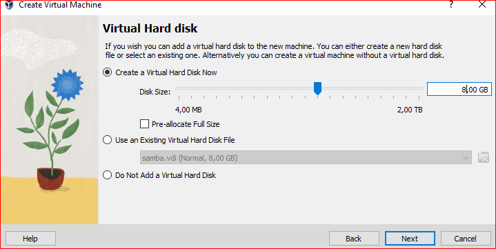
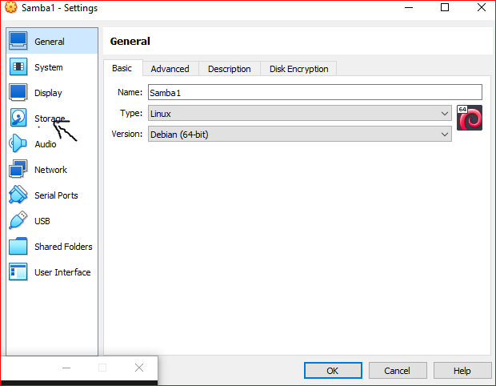
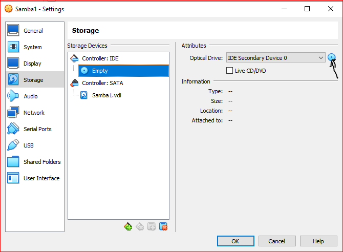
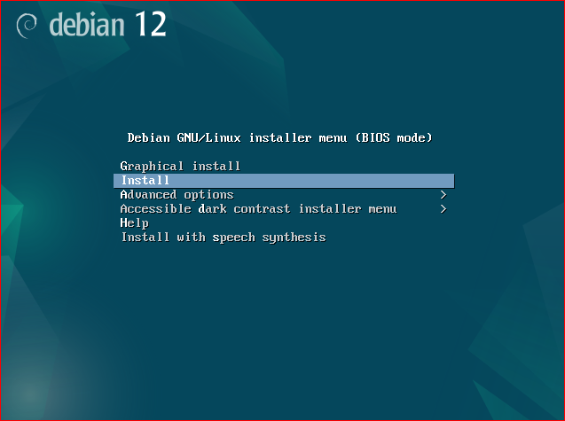

1. Download iso debian dan aplikasi Virtualbox.
2. Kemudian buka aplikasi VirtualBox dan klik "New".
 
3. Setelah itu isi nama virtual machine (misalnya, "user1"), pilih jenis sistem operasi (Linux), dan versi (Debian).

4. Lalu atur memori RAM yang akan dialokasikan untuk virtual machine (biasanya cukup 650 MB-2 GB).

5. Kemudian pilih untuk membuat hard disk virtual (sekarang atau nanti) dan atur ukuran yang sesuai.

6. Setelah itu klik "Next" untuk melanjutkan dan kemudian "Finish" untuk menyelesaikan.
7. Lalu klik "Settings" (Pengaturan) pada virtual machine yang baru dibuat.
8. Kemudian pilih tab "Storage" (Penyimpanan) dan klik pada ikon CD/DVD.

9. Setelah itu pilih "Choose a disk file" dan pilih image ISO Debian yang sudah diunduh.

10.Lalu mulai virtual machine dengan mengklik "Start".
11.Kemudian virtualBox akan membuka sesi instalasi Debian. Ikuti petunjuk di layar untuk menyelesaikan proses instalasi, seperti memilih bahasa, zona waktu, dan membuat akun pengguna.

12.Setelah proses instalasi selesai, virtual machine akan dapat menjalankan Debian.